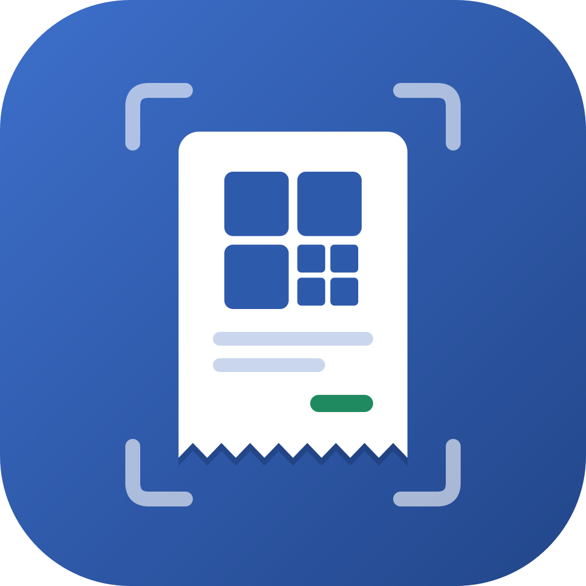

Privacy Policy
Last updated: 18 October 2026
This policy explains how Invoice2Sheet ("the app") handles your information. The app is made by Pedro Vicente ("I", "me") and runs on Android, iOS and the web.
In short: the app has no server of its own. Your invoices, photos and Google data go directly from your device to your own Google account. I don't collect, see, store, sell or share any of it. The app has no analytics, advertising or tracking.
1. Information the app handles
The app only processes information to do what you ask it to do:
- Invoice data. This is what the app reads from an invoice's fiscal QR code or what you type in: NIFs (tax numbers), dates, ATCUD, amounts, VAT and the merchant name.
- Invoice photos and PDFs. These are the images you take or pick, to upload to Google Drive.
- Your Google account. The app uses your name, email address and profile picture to show which account is connected. It also holds the access tokens Google issues when you sign in.
- Settings. These are your default spreadsheet and folder, your append rules, your theme and notification preferences, and the merchant names you have typed for each NIF.
2. Where it is stored
- On your device. Settings, invoice history and pending saves are kept in the app's private storage. On the web, that's your browser's local storage and IndexedDB. A photo stays on the device only until it has been uploaded, and is then deleted. Sign-in tokens are kept by Google Play services on Android, in the Keychain on iOS, and in the browser tab's session storage on the web.
- In your Google account. Each saved invoice becomes a row in a Google Sheet you choose, and its photo goes into a Google Drive folder you choose. These files belong to you and are governed by Google's own terms and privacy policy.
Nothing is sent to me or to any server I run.
3. Google user data
When you connect Google, the app asks for these permissions:
- Google Sheets (
…/auth/spreadsheets). The app uses it to read the header and ATCUD columns of the spreadsheet you picked, to check for duplicates, to create monthly tabs if you turn that on, and to append invoice rows. - Google Drive (
…/auth/drive). The app uses it to list your spreadsheets and folders so you can pick one, to create a new spreadsheet or folder when you ask, and to upload invoice photos into the folder you picked. The narrowerdrive.filepermission can't reach spreadsheets and folders that the app didn't create, so it isn't enough for this. - Basic profile and email. The app uses these to show which account is connected.
The app only reads or changes your Google data when you act in it, and only for the purposes above. It doesn't use Google data for advertising, doesn't sell or transfer it, and doesn't use it to train AI or machine-learning models. No person reads it.
The app's use and transfer of information received from Google APIs will adhere to the Google API Services User Data Policy, including the Limited Use requirements.
4. Device permissions
- Camera. The app uses it to scan QR codes and photograph invoices. Frames are processed on the device. On Android, QR codes are decoded on the device by Google ML Kit.
- Notifications. The app uses them to tell you when a save finishes or fails. You can turn them off in Settings.
- Internet. The app uses it to talk to Google's APIs.
5. Third parties
The app talks directly to Google: Google Sign-In, Google Identity Services, the Sheets API and the Drive API. On Android, Google Play services handles sign-in and ML Kit handles QR decoding. ML Kit decodes on the device, but Google may collect anonymous usage and performance metrics from it. If your browser has no built-in QR decoder, the web version loads the open-source jsQR library from the jsDelivr CDN. That request reveals your IP address to jsDelivr, as any page load does. The web app itself is hosted on GitHub Pages and Cloudflare Pages, which may log visitors' IP addresses. There is no other third-party service.
6. Keeping and deleting your data
- To remove the app's access to your Google account, sign out in the app or revoke it at myaccount.google.com/permissions.
- To delete the data on your device, uninstall the app. On the web, clear the site's data in your browser.
- Rows and photos already saved stay in your Google Sheets and Drive until you delete them there.
7. Your rights
Because I hold no personal data about you, there is nothing for me to access, correct, export or erase. You control all of it directly on your device and in your Google account. If you are in the EU, you keep your rights under the GDPR, including the right to complain to a data protection authority. In Portugal, that's the CNPD.
8. Children
The app is not directed at children under 16 and is not meant to be used by them.
9. Changes
If this policy changes, the new version will be posted on this page with a new "Last updated" date. Changes to how the app uses Google data will be posted here before they take effect.
10. Contact
For questions about this policy, get in touch through pedrovicente.pt.